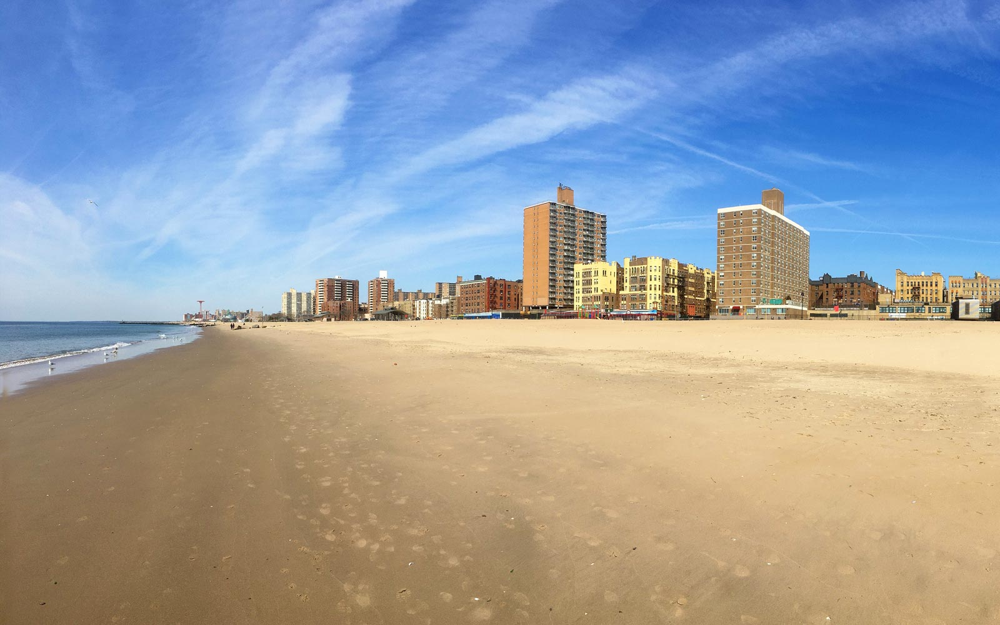

| Food | Places | OPera Cafe and Lounge
OPera is a Mediterranean Turkish restaurant in Sheepshead Bay, and my favorite item is the stuffed potato. |
Brighton Beach
I love going to Brighton Beach on the weekdays in the summer, because there aren't a lot of people and the water is great.  |
Hayashii Sushi |
|---|